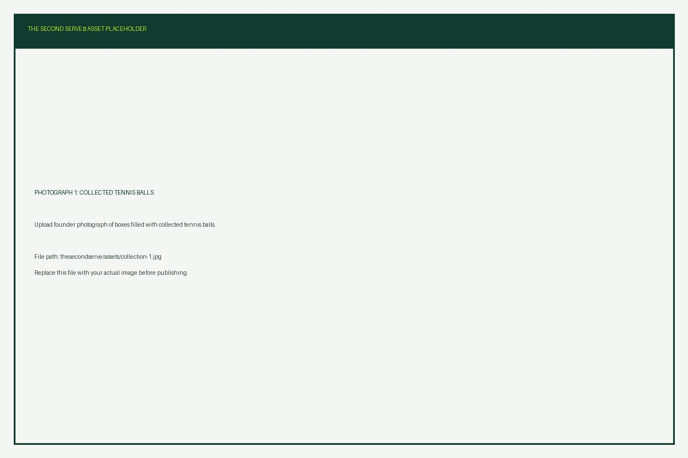
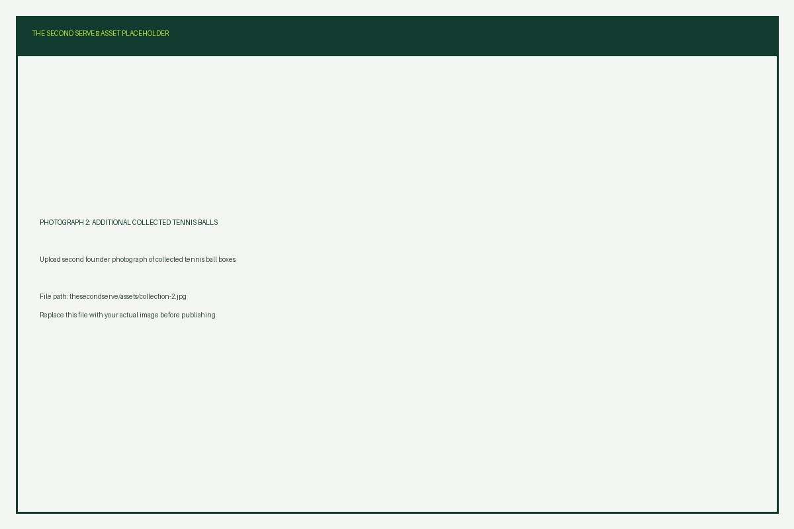
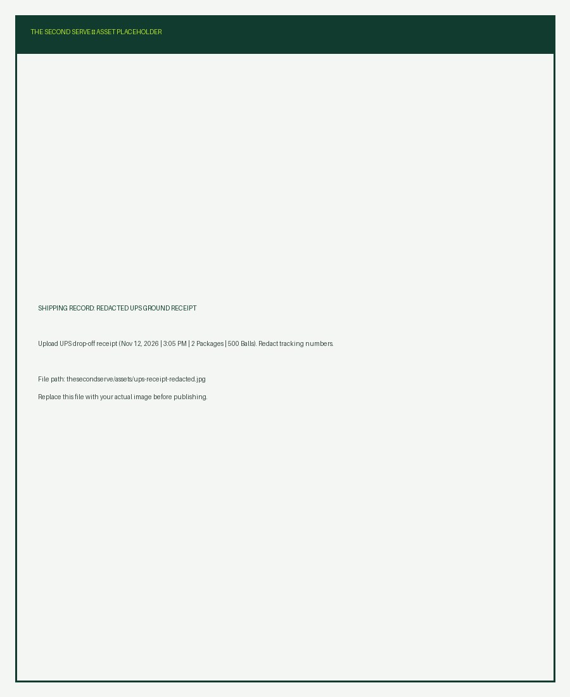

Our Work
Here, you can find photos of our operations as well as operational receipts.
Operations Gallery


Shipping & Operational Records
| Carrier | UPS |
|---|---|
| Service | UPS Ground |
| Drop-off date | November 12, 2026 |
| Drop-off time | 3:05 PM |
| Number of packages | 2 |
| Shipment quantity | 500 tennis balls |
Note: Tracking and reference numbers are redacted for privacy. This document is a drop-off receipt, not confirmation that the packages were delivered or processed.
